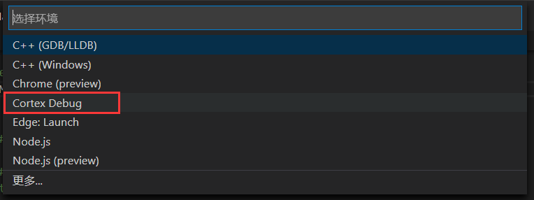

# 软件下载
OpenOCD：https://gnutoolchains.com/arm-eabi/openocd/
一个开源的片上调试器 (Open On-Chip Debugger)。在其他平台上，OpenOCD 是要自己 Configure 并且自己编译的，但是 Windows 平台上提供了编译好的二进制文件，所以只需要下载下来后随便解压出来就好了。安装完成后添加系统环境变量，可以利用 cmd 命令：openocd -v 测试。
介绍：https://www.berlios.de/software/openocd/
# 搭建调试链接
在这里需要说明的是，OpenOCD 文件夹下的 share/openocd/scripts 里面放的就是 openocd 在运行时所需要用到的各种配置文件，其中 interface 文件夹下放的是关于调试器的配置文件，而 target 文件夹放的是目标平台的配置文件，这里我们需要的是 interface/stlink.cfg 和 target/stm32l1.cfg ，不过不需要复制出来。注： stm32l1.cfg 是要选择你的目标芯片对应的文件，可以进入 ...\OpenOCD-20200729-0.10.0\share\openocd\scripts\target 路径下查找。
连接好 STLink 和板子，如果板子的调试接口正常的话；然后在终端控制台里键入命令： openocd -f interface/stlink.cfg -f target/stm32l1.cfg 回车，得到以下信息，即搭建了一个 GDB Server，连通了硬件调试器和 GDB，通过 USB 和硬件调试器连接，并且通过 TCP 和 GDB 连接：

# 下载配置
当你能正确实现以上操作时，那么，关闭终端显示的窗口，使之退出搭建的 GDB Server 链接；然后回到 tasks.json 文件里，在原本的 “tasks” 任务标签里再追加以下内容：
{ | |
"dependsOn":"Build", // 任务依赖 | |
"label": "Build and Download", | |
"type": "shell", | |
"command": "openocd", | |
"args": [ | |
"-f", | |
"interface/stlink.cfg", | |
"-f", | |
"target/stm32l1.cfg", | |
"-c", | |
"program ./build/${workspaceFolderBasename}.elf verify reset exit" | |
], | |
"problemMatcher": [] | |
} |
最后变成：

这个任务要求先进行 Build 任务，然后通过命令打开 openocd，加载两个配置文件（ -f interface/stlink.cfg 和 -f target/stm32l1.cfg ），同时，这个 -c 的选项后面跟着的就是 openocd 成功加载后执行的内置命令，这里我们让它下载、验证、reset，然后直接退出，这样就实现了一条龙式的下载。运行这个任务的方法就跟 Build 一样，在此就不过多介绍了，最后运行该任务你会发现，这小破板跑起来。
这里其实是经过了进入调试处理的操作，只不过我们让它自动退出了调试模式而已；因为下载和调试的区别是，下载只是把代码加载到芯片里，而不进行调试，也不会切换到调试页面，其实调试就已经会将代码下载到板子上了，所以这里所设置的下载，其实并不是单纯的下载，而是经过了进入调试，退出调试这样的操作，使我们人为的觉得是下载操作。
# 调试配置
在窗口里点击 运行 -> 添加配置：

接着，如果根据上一篇安装了 Cortex Debug 插件，就会出现如下选项（ps：如果窗口打开的是 .c 文件或者 .h 文件，只会显示前面两个选项，不知道是我电脑问题还是咋的，可以试着切换打开到 .json 文件或者打开 makefile 文件）：

点击框选的选项，在 .vscode 文件里会创建一个 launch.json 文件，然后把里面的内容修改成以下样子：
{ | |
// 使用 IntelliSense 了解相关属性。 | |
// 悬停以查看现有属性的描述。 | |
// 欲了解更多信息，请访问: https://go.microsoft.com/fwlink/?linkid=830387 | |
"version": "0.2.0", | |
"configurations": [ | |
{ | |
"name": "Cortex Debug", | |
"cwd": "${workspaceRoot}", // 输出路径 | |
"executable": "./build/${workspaceRootFolderName}.elf", // 要调试的程序 | |
"request": "launch", | |
"type": "cortex-debug", | |
"servertype": "openocd", // 调试器选择 | |
"device": "STM32L151CB", // 使用 J-link GDB Server 时必须；其他 GBD Server 时可选（有可能帮助自动选择 SVD 文件）。支持的设备见 https://www.segger.com/downloads/supported-devices.php | |
//"svdFile": "./STM32L15xC.svd", //svd 文件，有这个文件才能查看寄存器的值，每个单片机都不同。可以在以下地址找到 https://github.com/posborne/cmsis-svd 下载 | |
"interface": "swd", | |
"configFiles": [ | |
//"${workspaceRoot}/openocd.cfg", // * 可以通过加载该文件来配置 | |
"interface/stlink.cfg", | |
"target/stm32l1.cfg" | |
], | |
"runToMain": false, | |
"preLaunchTask": "Build", // 在调试前预先执行的任务，此处是 tasks.json 中的 | |
//"armToolchainPath": "C:\\Program Files (x86)\\GNU Tools ARM Embedded\\5.4 2016q3\\bin" // 如果没有把 arm 工具链路径添加到系统环境变量，则需要这条指令添加你的路径 | |
} | |
] | |
} |
这里主要就是指定 preLaunchTask ，顾名思义就是先运行某个任务后再启动调试，我们这里要先运行前面配置的 Build 任务，意为先编译再进行调试操作； servertype 调试器这里，我们就使用 openocd 就好了，因为它支持各种不同的调试器，若是仅使用 Jink，不用其他的调试器，那么，你可以改成 jlink，然后参考：https://zhuanlan.zhihu.com/p/163771273； device 是指定 STM32 的芯片型号，如果支持，则可以帮助调试器显示外设寄存器的值； configFiles 就是前面说到需要加载的那两个配置文件了（类似于键入命令： openocd –f interface/jlink.cfg –f target/stm32f4.cfg ）； runToMain 就是选择程序是从 main 函数开始加载，还是从汇编代码开始加载，stm32 启动都是从 startup_stm32xxx.s 开始的，所以这里得选择 false 。
然后在这里说一下，在 configFiles 中，注释了一行，在正常情况下，如果我们不带参数启动（即所谓的单纯键入命令： openocd ），openocd 就会默认自动查找当前目录下有没有名为 openocd.cfg 的文件，并把它作为配置文件来启动。若是你想在利用 openocd.cfg 来加载配置，那么就要在工程路径下（对应你在 configFiles 所填的路径文件）创建一个 openocd.cfg 文件，并添加以下内容：
# 选择调试器为JLink or CMSIS-DAP or STlink
#source [find interface/jlink.cfg]
#source [find interface/cmsis-dap.cfg]
source [find interface/stlink.cfg]
# 选择接口为SWD，jlink下打开
#transport select swd
# 选择目标芯片
source [find target/stm32l1.cfg]
实际上并不推荐这种方式，因为又要创建，又把 launch.json 的配置分开了，当整体移植 .vscode 文件夹并更换目标芯片时容易出现漏改参数。
# DEBUG 调试
在配置完成以上的 launch.json 调试参数后，点击窗口 运行 -> 启动调试（或者直接按 f5），就可以进入 debug 模式了：

VSCode 监视窗口 16 进制查看表达式，只需要在表达式后面加 ,h ，eg：buf,h ，则以 16 进制显示 buf 的值。
# GDB 常用命令
显示内存值
x/<n><f><u> <addr>（以<f>格式打印从<addr>开始的<n>个长度单元为<u>的内存值）：<n>表示要查看几个内存单元<f>表示显示的格式，x以十六进制输出，d以十进制输出，u以十六进制无符号输出，o以八进制输出，t以二进制输出，c以字符格式输出，s以字符串格式输出，f以浮点型数据输出<u>表示内存单元的大小，b是 1 byte，h是 2 byte（halfword），w是 4 byte（word），g是 8 byte（giant word）<addr>可以是地址，也可以是变量名
查找函数地址
info address <func_name>反找函数名
info symbol <func_addr>
https://sourceware.org/gdb/current/onlinedocs/gdb.html/index.html#SEC_Contents
https://wizardforcel.gitbooks.io/100-gdb-tips/content/index.html
对于使用 gdb server 调试，可看：https://openocd.org/doc/html/Server-Configuration.html